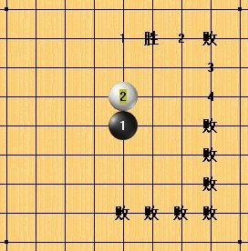
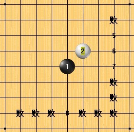
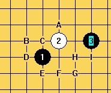
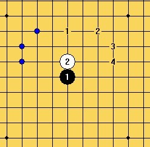
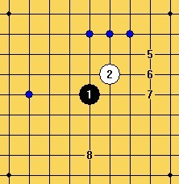
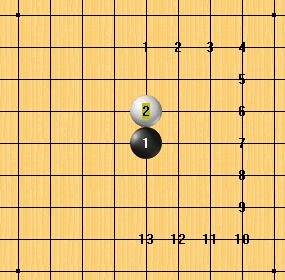
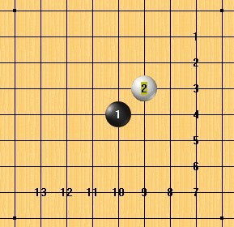
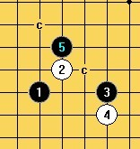

明教最后的妖刀----悬赏贴
#1 <font color="blue">明教最后的妖刀----悬赏贴</font> 作者：失落刀 发表时间：2010-10-24 21:43:54
众所周知，目前妖刀的研究脉络已逐渐清晰，现在横亘在拆棋界的妖刀还有八把，
分别是：
1大寒星、2外溪月、3外残月、4大残月、5外峡月、 6大峡月、7大恒星、8大明星。
为活跃妖刀拆棋界气氛，加速地毯进展，本帖特征集八大妖刀所面对的有趣味、挑战性问题，
一旦采纳，题目或会有鲜花（或鸡蛋）、威望、论坛金币、人民币奖励。（采纳题目后超版会明确具体奖励类别及数量）
一旦采纳，答案或会有鲜花（或鸡蛋）、威望、论坛金币、人民币奖励。
~~~~~~~~~~~~~~~~~~~~~~~~~~~~~~~~~~~~~~~~~~~~~~~~~~~~~~~~~~~~~~~~~
［此帖子已被 失落刀 在 2012-4-30 8:37:48 编辑过］
#2 Re:六扇门（妖刀版）----悬赏贴 作者：失落刀 发表时间：2010-10-24 21:59:27
 ［此帖子已被 失落刀 在 2012-5-1 8:03:00 编辑过］
#3 Re:六扇门（妖刀版）----悬赏贴 作者：失落刀 发表时间：2010-10-24 21:59:47
222222#4 Re:六扇门（妖刀版）----悬赏贴 作者：失落刀 发表时间：2010-10-24 22:01:29
333333本帖谢绝灌水，歪楼，鸡蛋伺候。#5 Re:六扇门（妖刀版）----悬赏贴 作者：失落刀 发表时间：2010-10-24 22:02:11
444444捣乱者有可能扣威望#6 Re:六扇门（妖刀版）----悬赏贴 作者：失落刀 发表时间：2010-10-24 22:02:59
555555楼主备用楼层占用完毕#7 Re:六扇门（妖刀版）----悬赏贴 作者：安娜制作所 发表时间：2010-10-25 7:56:58
我想知道:上面六个妖刀有一打胜的结果了吗,还是两打都未完成?［ 失落刀 于 2010-10-25 15:38:47 时花20金币送鲜花一朵］
#8 Re:六扇门（妖刀版）----悬赏贴 作者：日月丽天 发表时间：2010-10-25 8:27:25
上面的六个妖刀，一打都没有结论［ 失落刀 于 2010-10-25 15:46:51 时花20金币送鲜花一朵］
金币200奉上，请查社区银行账户----失落刀
［此帖子已被 失落刀 在 2010-10-28 19:40:51 编辑过］
#9 Re:六扇门（妖刀版）----悬赏贴 作者：日月丽天 发表时间：2010-10-25 8:27:28
上面的六个妖刀，一打都没有结论#10 Re:六扇门（妖刀版）----悬赏贴 作者：日月丽天 发表时间：2010-10-25 8:31:05
曾经有很多人认为人大峡月和大溪月都可以必胜，两个刀差不多，非也，大峡月的有好几个4一打都难地毯，和大溪月无法比，大峡月目前以棋感看还处于“理论必胜”，还需要继续研究呢［ 失落刀 于 2010-10-25 15:47:26 时花20金币送鲜花一朵］
#11 Re:Re:六扇门（妖刀版）----悬赏贴 作者：冥王哈迪斯 发表时间：2010-10-25 16:46:28
缺少强人帮助，，，本人是心有余力不足啊，，这六把刀问题都很多，，。。是不拆不知道 一拆吓一跳
［ 失落刀 于 2010-10-25 16:49:02 时花20金币送鲜花一朵］
#12 Re:六扇门（妖刀版）----悬赏贴 作者：冥王哈迪斯 发表时间：2010-10-25 16:50:52
花影教主，，私下能否联系一下，，有很多问题需要请教
爱五子棋-妖刀天下群85758007----群员失落刀
［此帖子已被 失落刀 在 2010-10-25 16:54:48 编辑过］
#13 Re:六扇门（妖刀版）----悬赏贴 作者：陈唯一 发表时间：2010-10-29 19:14:16
能否把一打没地毯的4分别贴图出来，方便研究，省了做重复的工作。#14 Re:六扇门（妖刀版）----悬赏贴 作者：失落刀 发表时间：2010-10-30 8:42:39
=======上图对应的爱五子棋谱代码如下，以便你拆解：========
h8h9h11h10a1i10b1j10c1i9o1j9n1
======================================================
#15 Re:六扇门（妖刀版）----悬赏贴 作者：家族粉丝 发表时间：2010-10-30 8:48:09
=======上图对应的爱五子棋谱代码如下，以便你拆解：========
h8i9k8i10a1h9o1j9o15k9a15i8b1j8n1h7n15i7b15j7a2k7o2i6
======================================================
金币赠送200，请社区银行查收----失落刀
［此帖子已被 失落刀 在 2010-10-30 18:16:34 编辑过］
#16 Re:六扇门（妖刀版）----悬赏贴 作者：家族粉丝 发表时间：2010-10-30 8:53:22
=======上图对应的爱五子棋谱代码如下，以便你拆解：========
h8h9k10i8j7a1i10
======================================================这两个5求结论。
金币赠送200，请社区银行查收----失落刀
［此帖子已被 失落刀 在 2010-10-30 18:17:22 编辑过］
#17 Re:六扇门（妖刀版）----悬赏贴 作者：家族粉丝 发表时间：2010-10-30 8:58:55
=======上图对应的爱五子棋谱代码如下，以便你拆解：========
h8h9j11i8g10a1j9
======================================================同16楼。
金币赠送200，请社区银行查收----失落刀
［此帖子已被 失落刀 在 2010-10-30 18:17:45 编辑过］
#18 Re:六扇门（妖刀版）----悬赏贴 作者：家族粉丝 发表时间：2010-10-30 9:00:06
=======上图对应的爱五子棋谱代码如下，以便你拆解：========
h8h9j11g10i8a1j9
======================================================两个5求结论。
金币赠送200，请社区银行查收----失落刀
［此帖子已被 失落刀 在 2010-10-30 18:18:08 编辑过］
#19 Re:六扇门（妖刀版）----悬赏贴 作者：日月丽天 发表时间：2010-10-31 10:00:01
=======上图对应的爱五子棋谱代码如下，以便你拆解：========
h8h9h11i11
======================================================寒星刀这个4，有2打必了？
#20 Re:六扇门（妖刀版）----悬赏贴 作者：日月丽天 发表时间：2010-10-31 10:02:50
=======上图对应的爱五子棋谱代码如下，以便你拆解：========
h8i9k8g8
======================================================恒刀这个4，2打也必了？
#21 Re:六扇门（妖刀版）----悬赏贴 作者：日月丽天 发表时间：2010-10-31 10:07:45
还是教主威武
=======上图对应的爱五子棋谱代码如下，以便你拆解：========
h8h9h11i11g8a1g9
======================================================两个打的5
金币赠送200，请社区银行查收----失落刀
［此帖子已被 失落刀 在 2010-10-31 10:30:53 编辑过］
#22 Re:六扇门（妖刀版）----悬赏贴 作者：日月丽天 发表时间：2010-10-31 10:20:51
=======上图对应的爱五子棋谱代码如下，以便你拆解：========
h8i9k8g8j7a1j8
======================================================
［此帖子已被 失落刀 在 2010-10-31 10:26:22 编辑过］
#23 Re:六扇门（妖刀版）----悬赏贴 作者：日月丽天 发表时间：2010-10-31 10:25:31
=======上图对应的爱五子棋谱代码如下，以便你拆解：========
h8i9k8g8j7a1j8
======================================================两打5
金币赠送200，请社区银行查收----失落刀
［此帖子已被 失落刀 在 2010-10-31 10:31:20 编辑过］
#24 Re:六扇门（妖刀版）----悬赏贴 作者：冥王哈迪斯 发表时间：2010-11-3 0:42:54
=======上图对应的爱五子棋谱代码如下，以便你拆解：========
h8i9i11g9h9a1j9
======================================================求这个4两打情况
金币赠送200，请社区银行查收----失落刀
［此帖子已被 失落刀 在 2010-11-16 18:09:00 编辑过］
#25 Re:六扇门（妖刀版）----悬赏贴 作者：冥王哈迪斯 发表时间：2010-11-3 0:43:59
=======上图对应的爱五子棋谱代码如下，以便你拆解：========
h8i9i11g8g9a1g11
======================================================这个4情况
金币赠送200，请社区银行查收----失落刀
［此帖子已被 失落刀 在 2010-11-16 18:09:30 编辑过］
#26 Re:六扇门（妖刀版）----悬赏贴 作者：失落刀 发表时间：2010-11-16 17:38:25
=======上图对应的爱五子棋谱代码如下，以便你拆解：========
h8i9k9i7i8a1j7
======================================================24楼的4，用这两个5，好像可以。
［ 冥王哈迪斯 于 2010-11-16 18:09:19 时花20金币送鲜花一朵］
#27 Re:六扇门（妖刀版）----悬赏贴 作者：小点心 发表时间：2010-11-16 17:47:51

金币赠送200，请社区银行查收----失落刀
［此帖子已被 失落刀 在 2010-11-16 17:56:39 编辑过］
#28 Re:六扇门（妖刀版）----悬赏贴 作者：冥王哈迪斯 发表时间：2010-12-4 21:10:54
没办法了，，，一个人力量有限，，，=======上图对应的爱五子棋谱代码如下，以便你拆解：========
h8h9k10j8i9a1j9
======================================================
#29 Re:六扇门（妖刀版）----悬赏贴 作者：冥王哈迪斯 发表时间：2010-12-4 21:12:26
=======上图对应的爱五子棋谱代码如下，以便你拆解：========
h8h9k10i11i9a1i8
======================================================
金币200.社区银行查收----失落刀
［此帖子已被 失落刀 在 2010-12-4 22:33:05 编辑过］
#30 Re:六扇门（妖刀版）----悬赏贴 作者：冥王哈迪斯 发表时间：2010-12-4 21:14:16
=======上图对应的爱五子棋谱代码如下，以便你拆解：========
h8h9k10j9i9
====================================================== 这个4目前不知道两大情况，，一打也未地毯，，，求结论
#31 Re:六扇门（妖刀版）----悬赏贴 作者：失落刀 发表时间：2010-12-4 22:30:35
=======上图对应的爱五子棋谱代码如下，以便你拆解：========
h8h9k10j9i9j10a1i10
======================================================
#32 Re:六扇门（妖刀版）----悬赏贴 作者：失落刀 发表时间：2010-12-4 22:31:35
=======上图对应的爱五子棋谱代码如下，以便你拆解：========
h8h9k10j9k9
======================================================这个也没有拆完。
#33 Re:六扇门（妖刀版）----悬赏贴 作者：踵酃 发表时间：2010-12-4 23:05:54
 大溪月地毯了吗？ 无谱无真相
大溪月地毯了吗？ 无谱无真相
#34 Re:六扇门（妖刀版）----悬赏贴 作者：失落刀 发表时间：2010-12-4 23:07:29
起码目前个人认为全世界还没有人地毯大峡月。。［此帖子已被 失落刀 在 2010-12-4 23:37:29 编辑过］
#35 Re:六扇门（妖刀版）----悬赏贴 作者：踵酃 发表时间：2010-12-4 23:10:32
众所周知，目前妖刀的研究脉络已逐渐清晰，随着大残月、大明星的悬赏、大溪月地毯的完成，现在横亘在拆棋界的妖刀还有六把，这不是你说的吗？怎么变成全世界都没地毯了？
#36 Re:六扇门（妖刀版）----悬赏贴 作者：陨落之城 发表时间：2010-12-4 23:33:59
此帖被失落刀 屏蔽于 2010-12-4 23:34:37
［此帖子已被 失落刀 在 2010-12-4 23:36:59 编辑过］
#37 Re:六扇门（妖刀版）----悬赏贴 作者：失落刀 发表时间：2010-12-4 23:35:28
大溪月地毯了。
我眼神不好，以为你说的大峡月。。。
［此帖子已被 失落刀 在 2010-12-4 23:35:48 编辑过］
#38 Re:六扇门（妖刀版）----悬赏贴 作者：踵酃 发表时间：2010-12-4 23:37:38
真的地毯了？厉害，哪里有的下载？#39 Re:六扇门（妖刀版）----悬赏贴 作者：逆刃 发表时间：2011-1-1 16:07:17
回LS，目前没有下载，请参考下面的帖子。ShowPost.asp?ThreadID=11011如有问题可以提出来。#40 Re:六扇门（妖刀版）----悬赏贴 作者：冥王哈迪斯 发表时间：2011-2-9 16:54:06
问外残月几个结论=======上图对应的爱五子棋谱代码如下，以便你拆解：========
h8h9k10j8
======================================================都说这个4必败，，必胜5是哪个？
［此帖子已被 冥王哈迪斯 在 2011-2-9 16:54:41 编辑过］
［此帖子已被 冥王哈迪斯 在 2011-2-9 17:01:26 编辑过］
［ 失落刀 于 2011-2-9 19:32:32 时花20金币送鲜花一朵］
#41 Re:六扇门（妖刀版）----悬赏贴 作者：冥王哈迪斯 发表时间：2011-2-9 16:56:05
还有这个4一打5在哪？=======上图对应的爱五子棋谱代码如下，以便你拆解：========
h8h9k10i9
======================================================
［ 失落刀 于 2011-2-9 19:31:47 时花20金币送鲜花一朵］
#42 Re:六扇门（妖刀版）----悬赏贴 作者：冥王哈迪斯 发表时间：2011-2-9 16:57:09
=======上图对应的爱五子棋谱代码如下，以便你拆解：========
h8h9k10k8
======================================================
=======上图对应的爱五子棋谱代码如下，以便你拆解：========
h8h9k10k7
======================================================一打?二打?
［ 失落刀 于 2011-2-9 19:31:35 时花20金币送鲜花一朵］
#43 Re:六扇门（妖刀版）----悬赏贴 作者：冥王哈迪斯 发表时间：2011-2-9 16:58:23
=======上图对应的爱五子棋谱代码如下，以便你拆解：========
h8h9k10i11
======================================================一打，二打？
［ 失落刀 于 2011-2-9 19:30:54 时花20金币送鲜花一朵］
#44 Re:六扇门（妖刀版）----悬赏贴 作者：冥王哈迪斯 发表时间：2011-2-9 16:59:43
=======上图对应的爱五子棋谱代码如下，以便你拆解：========
h8h9k10i8j7i9i7k7
======================================================唯一8是否能杀
［ 失落刀 于 2011-2-9 19:21:17 时花20金币送鲜花一朵］
赠送金币200请查收。
［此帖子已被 失落刀 在 2011-2-9 19:27:21 编辑过］
#45 Re:六扇门（妖刀版）----悬赏贴 作者：家族粉丝 发表时间：2011-2-9 19:24:39
=======上图对应的爱五子棋谱代码如下，以便你拆解：========
h8h9k10i9g9a1j9o1i10a15i8
======================================================
41楼有四个5结论未知。
［ 失落刀 于 2011-2-9 19:27:44 时花20金币送鲜花一朵］
赠送金币200请查收。
［此帖子已被 失落刀 在 2011-2-9 19:28:16 编辑过］
#46 Re:六扇门（妖刀版）----悬赏贴 作者：陈唯一 发表时间：2011-2-9 23:54:10
=======上图对应的爱五子棋谱代码如下，以便你拆解：========
h8h9k10k7
======================================================通
=======上图对应的爱五子棋谱代码如下，以便你拆解：========
h8h9k9k7k10
======================================================必胜
［ 冥王哈迪斯 于 2011-2-10 18:16:58 时花20金币送鲜花一朵］
［ 失落刀 于 2011-2-10 18:45:26 时奖励此帖[金币加 100 威望加1］
#47 Re:六扇门（妖刀版）----悬赏贴 作者：陈唯一 发表时间：2011-2-11 15:28:06
=======上图对应的爱五子棋谱代码如下，以便你拆解：========
h8h9k10j8j9
======================================================通
=======上图对应的爱五子棋谱代码如下，以便你拆解：========
h8h9j9j8k10
======================================================
似
=======上图对应的爱五子棋谱代码如下，以便你拆解：========
h8h9j9j8g7
======================================================
有点盘端，可以一试
［ 失落刀 于 2011-2-11 16:22:08 时奖励此帖[金币加 100 威望加1］
#48 Re:六扇门（妖刀版）----悬赏贴 作者：陈唯一 发表时间：2011-2-11 17:53:40
=======上图对应的爱五子棋谱代码如下，以便你拆解：========
h8h9k10i8j7i9i7k7g9j6h10
======================================================求强防
金币200，请查收----失落刀
［此帖子已被 失落刀 在 2011-2-11 21:09:00 编辑过］
#49 Re:六扇门（妖刀版）----悬赏贴 作者：有尽 发表时间：2011-3-26 22:51:13

-------------------------------------------------

-------------------------------------------------
1大寒星、2外溪月、3外残月、4大残月、5外峡月、 6大峡月、7大恒星、8大明星。
［ 失落刀 于 2011-3-27 18:21:06 时花20金币送鲜花一朵］
#50 Re:六扇门（妖刀版）----悬赏贴 作者：有尽 发表时间：2011-3-27 17:29:42
大寒星【D14】
外溪月【D16】
外残月【D18】
大残月【D19】
外峡月【i15】
大峡月【i16】
大恒星【i17】
大明星【i23】
［ 失落刀 于 2011-3-27 18:21:23 时花20金币送鲜花一朵］
#51 Re:六扇门（妖刀版）----悬赏贴 作者：有尽 发表时间：2011-3-27 17:31:29
 8大妖刀.rar
8大妖刀.rar
［ 失落刀 于 2011-3-27 18:26:46 时花20金币送鲜花一朵］
#52 Re:六扇门（妖刀版）----悬赏贴 作者：有尽 发表时间：2011-3-27 18:07:51

直止妖刀：
【D14】大寒星；【D15】大溪月；【D16】外溪月；【D17】大疏星；【D18】外残月；【D19】大残月；
【D20】大金星；【D21】大新月；【D22】外新月；【D23】大游星；【D24】外山月；【D25】大山月；【D26】大瑞星。
［ 失落刀 于 2011-3-27 18:19:33 时奖励此帖[金币加 100 威望加1］
#53 Re:六扇门（妖刀版）----悬赏贴 作者：有尽 发表时间：2011-3-27 18:16:19

斜止妖刀：
【i14】大长星；【i15】外峡月；【i16】大峡月；【i17】大恒星；【i18】大水月；【i19】外水月；
【i20】大流星；【i21】外岚月；【i22】大岚月；【i23】大明星；【i24】大名月；【i25】外名月；【i26】大彗星；
［ 失落刀 于 2011-3-27 18:19:45 时奖励此帖[金币加 100 威望加1］
#54 Re:六扇门（妖刀版）----悬赏贴 作者：家族粉丝 发表时间：2011-4-1 19:30:44
［ 失落刀 于 2011-4-1 19:49:29 时奖励此帖[金币加 100 威望加1］
#55 Re:六扇门（妖刀版）----悬赏贴 作者：家族粉丝 发表时间：2011-4-1 19:31:07
［ 失落刀 于 2011-4-1 19:49:43 时奖励此帖[金币加 100 威望加1］
#56 Re:Re:六扇门（妖刀版）----悬赏贴 作者：冥王哈迪斯 发表时间：2011-4-2 13:56:50
陈唯一，你QQ告诉我吧，具体问题我具体给你讲，最近忙，没时间拆棋。
#57 Re:最后的妖刀----悬赏贴 作者：有尽 发表时间：2011-4-2 20:59:44
=======上图对应的爱五子棋谱代码如下，以便你拆解：========
h8i9k10j9k9k8i10h9g9j10
======================================================
求解。
#58 Re:最后的妖刀----悬赏贴 作者：有尽 发表时间：2011-4-2 21:00:52
=======上图对应的爱五子棋谱代码如下，以便你拆解：========
h8i9k10j9k9k8i10j11j8i7j12h10a1j10
======================================================
求解。
#59 Re:最后的妖刀----悬赏贴 作者：有尽 发表时间：2011-4-2 21:02:05
=======上图对应的爱五子棋谱代码如下，以便你拆解：========
h8i9k10j9k9k8i10j7j8l9
======================================================
求解。
#60 Re:最后的妖刀----悬赏贴 作者：有尽 发表时间：2011-4-2 21:03:17
=======上图对应的爱五子棋谱代码如下，以便你拆解：========
h8i9k10j9k9k8i10j8h10j10j7
======================================================
黑胜？
#61 Re:最后的妖刀----悬赏贴 作者：有尽 发表时间：2011-4-2 21:04:33
=======上图对应的爱五子棋谱代码如下，以便你拆解：========
h8i9k10j9k9j8h10h9
======================================================
求解。
#62 Re:最后的妖刀----悬赏贴 作者：有尽 发表时间：2011-4-2 21:06:27
=======上图对应的爱五子棋谱代码如下，以便你拆解：========
h8i9k10j9k9j8h10i10k8k7i11j12
======================================================
求解。
#63 Re:最后的妖刀----悬赏贴 作者：有尽 发表时间：2011-4-2 21:44:04
=======上图对应的爱五子棋谱代码如下，以便你拆解：========
h8i9k8j6h10a1j9
======================================================
4必败。
［ 失落刀 于 2011-4-2 23:24:54 时奖励此帖[金币加 100 威望加1］
#64 Re:最后的妖刀----悬赏贴 作者：有尽 发表时间：2011-4-2 22:36:15
=======上图对应的爱五子棋谱代码如下，以便你拆解：========
h8i9k8k7h10a1i10
======================================================
4必败。
［ 失落刀 于 2011-4-2 23:28:08 时奖励此帖[金币加 100 威望加1］
#65 Re:最后的妖刀----悬赏贴 作者：有尽 发表时间：2011-4-3 10:22:30
=======上图对应的爱五子棋谱代码如下，以便你拆解：========
h8i9k8i6j9
======================================================
5必胜，另一个5呢？
#66 Re:Re:最后的妖刀----悬赏贴 作者：潇洒 发表时间：2011-4-3 10:26:37

地毯2个6
［ 失落刀 于 2011-4-3 10:33:25 时奖励此帖[金币加 100 威望加1］
#67 Re:最后的妖刀----悬赏贴 作者：失落刀 发表时间：2011-4-3 10:34:54
=======上图对应的爱五子棋谱代码如下，以便你拆解：========
h8i9k8i6i7j6a1j8
======================================================
两个略微强一点的6.
#68 Re:最后的妖刀----悬赏贴 作者：失落刀 发表时间：2011-4-3 11:09:25
=======上图对应的爱五子棋谱代码如下，以便你拆解：========
h8i9k8i6i7j8j6k5h10
======================================================
#69 Re:最后的妖刀----悬赏贴 作者：有尽 发表时间：2011-4-3 19:07:12
=======上图对应的爱五子棋谱代码如下，以便你拆解：========
h8i9k8i6i10j9h9g8
======================================================
求解。
#70 Re:最后的妖刀----悬赏贴 作者：有尽 发表时间：2011-4-3 19:08:23
=======上图对应的爱五子棋谱代码如下，以便你拆解：========
h8i9k8i6h10h7a1g8
======================================================
求解。
#71 Re:最后的妖刀----悬赏贴 作者：有尽 发表时间：2011-4-4 19:43:22
=======上图对应的爱五子棋谱代码如下，以便你拆解：========
h8h9h11h10a1i11o1i10o15i9a15
======================================================
大寒星的4.
#72 Re:最后的妖刀----悬赏贴 作者：有尽 发表时间：2011-4-4 19:44:56
=======上图对应的爱五子棋谱代码如下，以便你拆解：========
h8h9k9g9a1i9
======================================================
大残月的4.
#73 Re:最后的妖刀----悬赏贴 作者：有尽 发表时间：2011-4-4 19:46:44
=======上图对应的爱五子棋谱代码如下，以便你拆解：========
h8i9h5g9a1h9o1j8o15j7
======================================================
大明星的4.
#74 Re:最后的妖刀----悬赏贴 作者：有尽 发表时间：2011-4-5 8:32:03
=======上图对应的爱五子棋谱代码如下，以便你拆解：========
h8i9k8i10a1h9o1j9o15i8a15j8b1h7o2i7n15j7a14
======================================================
大恒星的4.
［此帖子已被 失落刀 在 2011-4-10 0:35:19 编辑过］
#75 Re:最后的妖刀----悬赏贴 作者：有尽 发表时间：2011-4-5 8:35:41
=======上图对应的爱五子棋谱代码如下，以便你拆解：========
h8i9k9i10a1g9o1h9o15g8a15j8b1i7o2j7
======================================================
大峡月的4.
#76 Re:最后的妖刀----悬赏贴 作者：冥王哈迪斯 发表时间：2011-4-28 21:15:16
很久没拆棋了。。看到了以前拆的外溪月。。有几个问题大家共同讨论一下。。
=======上图对应的爱五子棋谱代码如下，以便你拆解：========
h8h9j11h10
======================================================求一二打必胜5
［ 失落刀 于 2011-4-30 8:25:41 时花20金币送鲜花一朵］
#77 Re:最后的妖刀----悬赏贴 作者：冥王哈迪斯 发表时间：2011-4-28 21:17:35
=======上图对应的爱五子棋谱代码如下，以便你拆解：========
h8h9j11i11
======================================================求一二打必胜5
#78 Re:最后的妖刀----悬赏贴 作者：冥王哈迪斯 发表时间：2011-4-28 21:18:47
=======上图对应的爱五子棋谱代码如下，以便你拆解：========
h8h9j11i9
======================================================求一二打必胜5
#79 Re:最后的妖刀----悬赏贴 作者：冥王哈迪斯 发表时间：2011-4-28 21:19:35
=======上图对应的爱五子棋谱代码如下，以便你拆解：========
h8h9j11i7
======================================================求一二打必胜5
［ 失落刀 于 2011-4-30 8:25:12 时花20金币送鲜花一朵］
#80 Re:最后的妖刀----悬赏贴 作者：冥王哈迪斯 发表时间：2011-4-28 21:21:07
=======上图对应的爱五子棋谱代码如下，以便你拆解：========
h8h9j11j7a1j8b1j9
======================================================求一二打必胜5
［ 失落刀 于 2011-4-28 21:30:20 时花20金币送鲜花一朵］
#81 Re:最后的妖刀----悬赏贴 作者：冥王哈迪斯 发表时间：2011-4-28 21:23:14
=======上图对应的爱五子棋谱代码如下，以便你拆解：========
h8h9j11k9a1k8b1
======================================================求一二打
［ 失落刀 于 2011-4-28 21:49:31 时奖励此帖[金币加 100 威望加1］
#82 Re:Re:六扇门（妖刀版）----悬赏贴 作者：知布 发表时间：2011-5-13 23:32:56
引用：
原文由 家族粉丝 发表于 2011-4-1 19:30:44 :
想请问一下，小弟印象中论这是二打的结论？
那一打的结论又是如何呢？
［此帖子已被 知布 在 2011-5-13 23:37:49 编辑过］
［ 失落刀 于 2011-5-14 9:16:37 时花20金币送鲜花一朵］
#83 Re:Re:六扇门（妖刀版）----悬赏贴 作者：知布 发表时间：2011-5-13 23:35:19
引用：也请教这图的一打结论
原文由 家族粉丝 发表于 2011-4-1 19:31:07 :
#84 Re:最后的妖刀----悬赏贴 作者：冥王哈迪斯 发表时间：2011-6-23 12:46:54
搞定了一个4 我和军哥一起做的。。这个4做外残月的时候就找不到绝佳的5 过了这么久偶然间看到一盘棋。。对手走的一个非常漂亮的外残通外溪。。并且位置我目测了一下 必胜是没问题的。。。经过拆解。。证实了我的结论。。过程我不说了。。其实不也难。。这个4一打有了结论。。黑必胜！
=======上图对应的爱五子棋谱代码如下，以便你拆解：========
h8h9j11i11k10
======================================================
［此帖子已被 冥王哈迪斯 在 2011-6-23 12:48:15 编辑过］
［ 失落刀 于 2011-6-24 7:38:28 时奖励此帖[金币加 100 威望加1］
#85 Re:最后的妖刀----悬赏贴 作者：冥王哈迪斯 发表时间：2011-6-23 12:51:46
。。这个插棋盘系统有漏洞吧。。星位居然在13线？应该是12线吧？
［ 小丸.net 于 2011-6-23 13:47:36 时奖励此帖[金币加 100 威望加1］
#86 Re:最后的妖刀----悬赏贴 作者：岑小鱼 发表时间：2011-6-23 13:38:47
嘿，，你不说还真留意这个问题。。。#87 Re:最后的妖刀----悬赏贴 作者：冥王哈迪斯 发表时间：2011-6-27 12:32:36
今日真是惊喜不断啊。。再次完成外溪月的一个纠结4的必胜结论！过程很艰辛。。。此5最初是军哥告诉我的。。和月光公主联手拆解。。最后的唯一点被逆刃老师搞定了！呵呵感谢你们的帮助。。再次完成又力作 --对你们表示致敬！！！
=======上图对应的爱五子棋谱代码如下，以便你拆解：========
h8h9j11j9g9
====================================================== 黑5 必胜！过程不多说了、、有别人的成果。。
［此帖子已被 冥王哈迪斯 在 2011-6-27 12:33:27 编辑过］
［此帖子已被 冥王哈迪斯 在 2011-6-27 12:39:14 编辑过］
［ 失落刀 于 2011-6-27 12:39:48 时奖励此帖[金币加 100 威望加1］
#88 Re:最后的妖刀----悬赏贴 作者：安娜制作所 发表时间：2011-7-20 17:28:17
木前做到啥进度了,前面几个都有结论没?
#89 Re:最后的妖刀----悬赏贴 作者：小小亦默 发表时间：2011-7-20 21:48:25
山口规则越来越受欢迎了，妖刀估计也要风光了 失落刀，允许砸我一个臭鸡蛋~~~
失落刀，允许砸我一个臭鸡蛋~~~［ 失落刀 于 2011-7-22 12:18:01 时花20金币送鲜花一朵］
［ 失落刀 于 2011-7-22 14:19:35 时花20金币送鲜花一朵］
#90 Re:最后的妖刀----悬赏贴 作者：花落无痕 发表时间：2011-7-22 14:25:08
请求臭鸡蛋就给两朵花呀？那请求板砖的话，您不是要给10朵花了吗
#91 Re:最后的妖刀----悬赏贴 作者：自来水 发表时间：2011-7-22 14:42:30
 那可能真的是一板砖
那可能真的是一板砖
#92 Re:最后的妖刀----悬赏贴 作者：失落刀 发表时间：2011-7-22 14:47:13
欢迎大家一起研究妖刀。
#93 Re:Re:最后的妖刀----悬赏贴 作者：小小亦默 发表时间：2011-7-22 14:53:18
引用：
原文由 花落无痕 发表于 2011-7-22 14:25:08 :
请求臭鸡蛋就给两朵花呀？那请求板砖的话，您不是要给10朵花了吗
 嫉妒偶挖，这可是战术，战术哈
嫉妒偶挖，这可是战术，战术哈
#94 Re:Re:最后的妖刀----悬赏贴 作者：花落无痕 发表时间：2011-7-26 22:01:52
引用：
原文由 冥王哈迪斯 发表于 2011-6-27 12:32:36 :今日真是惊喜不断啊。。再次完成外溪月的一个纠结4的必胜结论！过程很艰辛。。。此5最初是军哥告诉我的。。和月光公主联手拆解。。最后的唯一点被逆刃老师搞定了！呵呵感谢你们的帮助。。再次完成又力作 --对你们表示致敬！！！
=======上图对应的爱五子棋谱代码如下，以便你拆解：========
h8h9j11j9g9
====================================================== 黑5 必胜！过程不多说了、、有别人的成果。。［此帖子已被 冥王哈迪斯 在 2011-6-27 12:33:27 编辑过］
［此帖子已被 冥王哈迪斯 在 2011-6-27 12:39:14 编辑过］
［ 失落刀 于 2011-6-27 12:39:48 时奖励此帖[金币加 100 威望加1］
=======上图对应的爱五子棋谱代码如下，以便你拆解：========
h8h9j11j9g9i9i7j6i11h10g11h11f10e11h12i13k9j10j8l10i10l12
======================================================
求教老师下面的走法，或者前面哪步错了
#95 Re:最后的妖刀----悬赏贴 作者：侯军学棋 发表时间：2011-7-27 0:05:19
454545477.rar
［ 失落刀 于 2011-7-27 6:37:33 时奖励此帖[金币加 100 威望加1］
［ 花落无痕 于 2011-7-27 8:57:56 时花20金币送鲜花一朵］
#96 Re:Re:最后的妖刀----悬赏贴 作者：花落无痕 发表时间：2011-7-27 8:58:34
引用：谢谢老师
原文由 侯军学棋 发表于 2011-7-27 0:05:19 :［ 失落刀 于 2011-7-27 6:37:33 时奖励此帖[金币加 100 威望加1］
［ 花落无痕 于 2011-7-27 8:57:56 时花20金币送鲜花一朵］
#97 Re:最后的妖刀----悬赏贴 作者：月光公主 发表时间：2011-7-27 9:33:07
花教主我也要威望,外溪我也有份的
［ 失落刀 于 2012-2-18 10:02:26 时奖励此帖[金币加 100 威望加1］
#98 Re:最后的妖刀----悬赏贴 作者：花落无痕 发表时间：2011-7-27 9:41:01
我是初入‘明教’的新人，希望和各位老师学到更多的东西
（总给比教外人士有些便利吧）
#99 Re:最后的妖刀----悬赏贴 作者：月光公主 发表时间：2011-7-27 12:25:36
教主给威望是很有原则的,不是乱给哈!
请问楼上你在明教里叫什么呢?
#100 Re:最后的妖刀----悬赏贴 作者：花落无痕 发表时间：2011-7-27 15:22:42
我就是论坛里面加入的呀，没经过大家的允许
#101 Re:最后的妖刀----悬赏贴 作者：虎哥 发表时间：2012-2-18 10:08:39
花落无痕MM好久不见
［ 失落刀 于 2012-2-18 10:09:35 时花20金币送鲜花一朵］
#102 Re:最后的妖刀----悬赏贴 作者：王安石 发表时间：2012-2-19 8:38:36
妖刀在正式比赛为什么不让开啊，，怎么回事啊